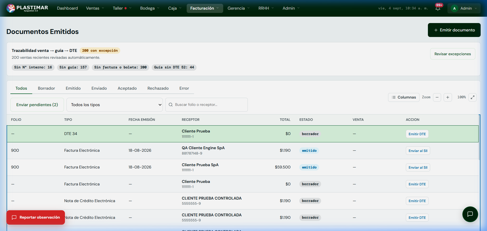

1. Tu Rol en el ERP Plastimar
Cumplimiento TributarioEl área de facturación electrónica conecta la gestión comercial de Plastimar con las normativas del Servicio de Impuestos Internos (SII). En el SisGestión 3.0, el motor de facturación está integrado directamente en la plataforma: firma los documentos con el certificado digital de Plastimar, valida los códigos de autorización (CAF) y genera el timbre electrónico reglamentario.
Tu Misión Principal
Supervisar la emisión de Facturas, Boletas, Guías y Notas de Crédito, garantizando que todo documento cumpla con los requisitos tributarios chilenos y que las ventas mantengan su trazabilidad Venta → Guía → DTE.
2. Documentos Electrónicos y Reglas Clave del SII
Normativa Tributaria| Tipo DTE | Nombre del Documento | Destinatario | Requisitos y Efecto |
|---|---|---|---|
| DTE 33 | Factura Electrónica | Empresas, Municipalidades y Colegios con RUT. | Afecta a IVA (19%). Da derecho a crédito fiscal. |
| DTE 34 | Factura No Afecta o Exenta | Operaciones o instituciones exentas. | Sin cobro de IVA. |
| DTE 39 | Boleta Electrónica | Personas naturales / Consumidor Final. | Venta en mesón de sucursal. IVA incluido. |
| DTE 52 | Guía de Despacho Electrónica | Todo traslado de mercadería a clientes. | Respaldo físico y legal obligatorio en carretera. |
| DTE 61 | Nota de Crédito Electrónica | Clientes con facturas emitidas previas. | Anulación total, descuento o devolución de producto. |
Regla operativa interna: máximo 20 líneas por documento
SisGestión aplica un límite interno de Plastimar de 20 líneas. Si la operación lo supera, divide manualmente los ítems, evita omisiones/duplicidades y verifica que la suma de ambos documentos represente el total. El ERP no divide automáticamente 35 líneas en 20 + 15.
3. Pantalla de Facturación y Documentos Emitidos
Tu Mesa de TrabajoAl ingresar a Facturación → Documentos verás el panel de control tributario:

Procedimiento Paso a Paso para Emitir un Documento
Generar el Borrador del Documento
Haz clic en el botón superior [+ Emitir documento] o ingresa desde una venta confirmada. El sistema pre-cargará los datos tributarios del cliente (Razón Social, RUT, Giro, Dirección) y las líneas de detalle.
Validación y Timbraje Digital (Emitir DTE)
Al presionar [Emitir DTE] en la fila del borrador, el ERP:
- Asigna el folio correlativo disponible del CAF vigente.
- Genera el XML oficial y lo firma con el Certificado Digital de Plastimar.
- Genera el código de barras bidimensional PDF417 (timbre fiscal). El documento pasa a estado Emitido.
Envío al SII y Confirmación
Haz clic una vez en [Enviar al SII]. El resultado inicial queda como Enviado con Track ID; luego consulta/actualiza hasta obtener Aceptado, Rechazado o Reparo. Track ID no equivale a aceptación.
Auditoría de Excepciones
En la parte superior, revisa el panel Trazabilidad venta → guía → DTE. Presiona Revisar excepciones para auditar ventas antiguas que requieran regularizar su factura o guía de despacho pendiente.
4. Emisión de Notas de Crédito (DTE 61)
Correcciones y DevolucionesSi un cliente solicita la anulación de una factura o la devolución parcial de productos entregados:
- Ubica la Factura original en la tabla y selecciona la opción Emitir Nota de Crédito.
- Selecciona el motivo reglamentario exigido por el SII:
- 1: Anula Documento de Referencia (para anulación total).
- 2: Corrige Texto Documento de Referencia (para corrección de razón social o dirección).
- 3: Corrige Montos (para descuentos o devoluciones parciales).
- El sistema emite el DTE 61 con referencia obligatoria al folio de la factura original y actualiza el saldo en cobranza.
¿Rechazo del SII o problema con el Certificado Digital?
Si el servidor del SII retorna un error en el track ID o el certificado arroja advertencias de expiración:
Haz clic en el botón flotante rojo [Reportar observación] abajo a la izquierda. Marca la casilla "Este caso depende de una integración externa (SII...)" para que el equipo de soporte técnico analice el log tributario de inmediato.
5. Semáforo ante errores
No duplicar- Sin folio: corrige el borrador.
- Con folio y sin Track ID: no vuelvas a emitir; revisa el envío.
- Con Track ID: consulta el estado; no vuelvas a subir el mismo XML.
- En rechazo, conserva código, mensaje, folio, Track ID, tipo, ambiente y hora.
- Nunca adjuntes certificado, clave, CAF ni secretos en Feedback.